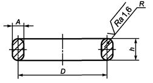

<h3>Масса прокладки по ГОСТ Р 53561-2009</h3>

<form>
    <label>Ширина прокладки (А), мм</label>
    <input class="w3-input w3-border" type="number" ng-model="a" placeholder="ширина">
    <label>Высота прокладки (h), мм</label>
    <input class="w3-input w3-border" type="number" ng-model="h" placeholder="высота">
    <label>Диаметр прокладки (D), мм</label>
    <input class="w3-input w3-border" type="number" ng-model="D" placeholder="диаметр">
    <label>Точность вывода результатов (знаки после запятой)</label>
    <input class="w3-input w3-border" type="number" ng-model="tochnost" placeholder="точность">
</form>

<br>

<table class="w3-table w3-bordered w3-striped">
  <tr>
    <td>Масса прокладки, кг</td>
    <td>{{ massa }}</td>
  </tr>
</table>
